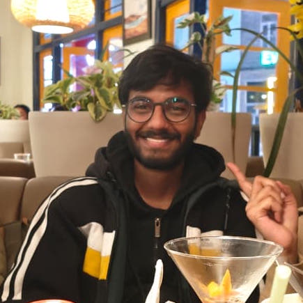

Kalpesh Chaware
BS-MS · Earth Sciences · IISER Kolkata
Hi! I'm Kalpesh, a 5th year BS-MS student at IISER Kolkata, majoring in Earth Sciences with a minor in Computer Science.
Right now I'm working on ambient seismic noise under the supervision of Prof. Kajaljyoti Borah. Seismometers record this constant background hum all the time, and if you study this background "noise", you can actually watch the ground's seismic velocity change after earthquakes, near volcanoes before eruptions, and with the seasons. That's what I'm exploring in my thesis.
When I'm not staring at seismograms or waiting for code to finish running, I'm probably halfway through some series. I like dystopian stuff like Black Mirror or Severance, and I'm currently watching The Twilight Zone.
I also like editing the pictures I take on trips and field work. A few of them are here.

research interests
Ambient seismic noise · Seismic interferometry